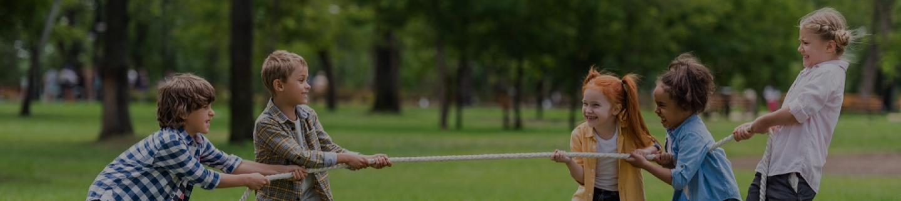

Recreatur
Recreatur Roteiros Culturais e Históricos - é um projeto realizado há 11 anos no Bairro do Jaraguá em SP, nas cidades de Cotia e Campos do Jordão.
Oferece formação profissional e humanística para os jovens na área de recreação pedagógica e turismo lúdico.
Mais de 600 jovens formados, para o mercado de trabalho, atuando em empresas de recreação, acampamentos, hotéis, cruzeiros, eventos em geral.